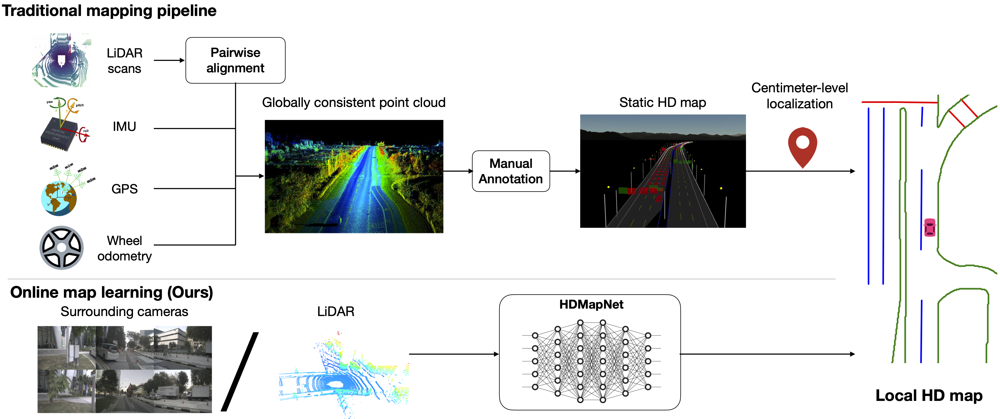
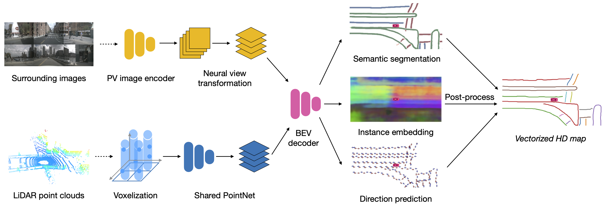
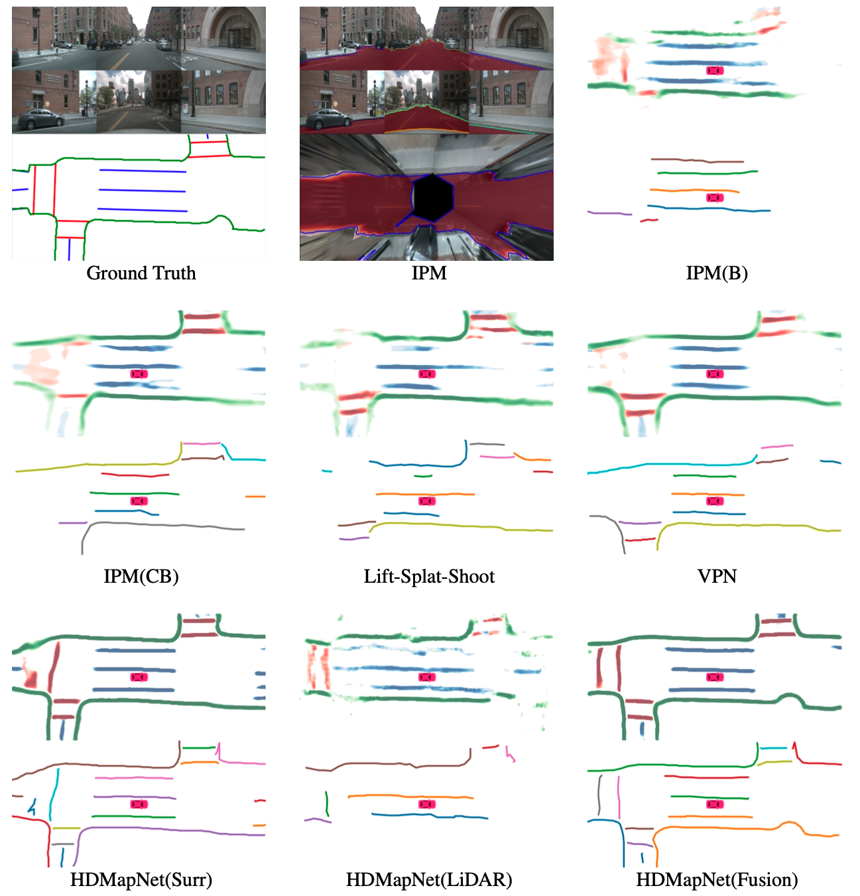

Main idea. High-definition map (HD map) construction is a crucial problem for autonomous driving. This problem typically involves collecting high-quality point clouds, fusing multiple point clouds of the same scene, annotating map elements, and updating maps constantly. This pipeline, however, requires a vast amount of human efforts and resources which limits its scalability. In this paper, we argue that online map learning, which dynamically constructs the HD maps based on local sensor observations, is a more scalable way to provide semantic and geometry priors to self-driving vehicles than traditional pre-annotated HD maps. We introduce a strong online map learning method, titled HDMapNet.
Method

The overview of HDMapNet. Four neural network parameterize our model: a perspective view image encoder, a neural view transformer in image branch, a pillar-based point cloud encoder, and a map element decoder. The output of the map decoder has 3 branches: semantic segmentation, instance detection and direction classification, which are processed into vectorized HD map.
Result
We compare our method against vanilla Inverse Perspective Mapping (IPM), IPM with bird's eye view encoder (IPM(B)), IPM with cam view encoder and bird's eye view encoder (IPM(CB)), Lift-Splat-Shoot and View Prasing Network.

The qualitative results on nuScenes dataset. Top Left: we show the surrounding images and the ground-truth local HD Map annotations. IPM: we show the lane segmentation result in the perspective view and in the bird's-eye view. Others: we show the semantic segmentation results and the vectorized instance detection results. As we can see, Our HDMapNet(Surr) and HDMapNet(Fusion) outputs are close to the ground-truth HD Map and the fusion based HDMapNet is clearly the best.
VIDEO
Contact
If you find our work useful in your research, please consider citing:
@misc{li2021hdmapnet,
title={HDMapNet: An Online HD Map Construction and Evaluation Framework},
author={Qi Li and Yue Wang and Yilun Wang and Hang Zhao},
year={2021},
eprint={2107.06307},
archivePrefix={arXiv},
primaryClass={cs.CV}
}